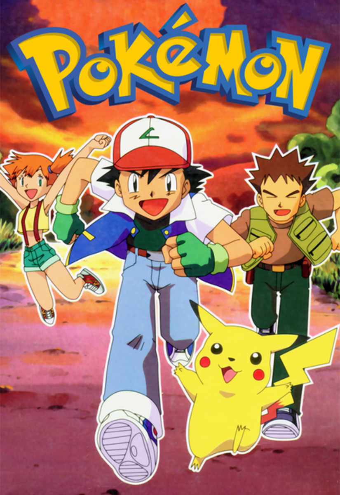

Best Animated Series
 |
 |
 |
 |
Dragon Ball::

Dragon Ball is a Japanese media franchise created by Akira Toriyama in 1984. The initial manga, written and illustrated by Toriyama, was serialized in Weekly Shōnen Jump from 1984 to 1995, with the 519 individual chapters collected into 42 tankōbon volumes by its publisher Shueisha. Dragon Ball was originally inspired by the classical 16th-century Chinese novel Journey to the West, combined with elements of Hong Kong martial arts films. Dragon Ball characters also use a variety of East Asian martial arts styles, including karate and Wing Chun (kung fu). The series follows the adventures of protagonist Son Goku from his childhood through adulthood as he trains in martial arts. He spends his childhood far from civilization until he meets a teen girl named Bulma, who encourages him to join her quest in exploring the world in search of the seven orbs known as the Dragon Balls, which summon a wish-granting dragon when gathered. Along his journey, Goku makes several other friends, becomes a family man, discovers his alien heritage, and battles a wide variety of villains, many of whom also seek the Dragon Balls.
Toriyama's manga was adapted and divided into two anime series produced by Toei Animation: Dragon Ball and Dragon Ball Z, which together were broadcast in Japan from 1986 to 1996. Additionally, the studio has developed 21 animated feature films and three television specials, as well as an anime sequel series titled Dragon Ball GT (1996–1997) and an anime midquel series titled Dragon Ball Super (2015–2018). From 2009 to 2015, a revised version of Dragon Ball Z aired in Japan under the title Dragon Ball Kai, as a recut that follows the manga's story more faithfully by removing most of the material featured exclusively in the anime. Several companies have developed various types of merchandising based on the series leading to a large media franchise that includes films (both animated and live-action), collectible trading card games, and numerous action figures, along with several collections of soundtracks and numerous video games. Dragon Ball has become one of the highest-grossing media franchises of all time.
Naruto ::
Naruto[d] is a Japanese anime television series based on Masashi Kishimoto's manga series of the same name. The story follows Naruto Uzumaki, a young ninja who seeks recognition from his peers and dreams of becoming the Hokage, the leader of his village. Just like the manga, the anime series is divided into two separate parts: the first series retains the original manga's title and is set in Naruto's pre-teen years. The second series, a direct sequel titled Naruto: Shippuden[e], takes place during his teens.
The first Naruto anime series, directed by Hayato Date and produced by Studio Pierrot and TV Tokyo, premiered in Japan on October 3, 2002, and concluded on February 8, 2007, after 220 episodes. The first 135 episodes were adapted from Part I of the manga; the remaining 85 episodes are original and use plot elements that are not in the manga.

One Piece (stylized in all caps) is a Japanese manga series written and illustrated by Eiichiro Oda. It has been serialized in Shueisha's shōnen manga magazine Weekly Shōnen Jump since July 1997, with its individual chapters compiled into 106 tankōbon volumes as of July 2023. The story follows the adventures of Monkey D. Luffy and his crew, the Straw Hat Pirates, where he explores the Grand Line in search of the mythical treasure known as the "One Piece" in order to become the next King of the Pirates.
The manga spawned a media franchise, having been adapted into a festival film by Production I.G, and an anime series by Toei Animation, which began broadcasting in 1999. Additionally, Toei has developed fourteen animated feature films, one original video animation, and thirteen television specials. Several companies have developed various types of merchandising and media, such as a trading card game and numerous video games. The manga series was licensed for an English language release in North America and the United Kingdom by Viz Media and in Australia by Madman Entertainment. The anime series was licensed by 4Kids Entertainment for an English-language release in North America in 2004 before the license was dropped and subsequently acquired by Funimation in 2007.
Pokiman ::

Pokémon abbreviated from the Japanese title of Pocket Monsters and currently branded in English as Pokémon the Series is a Japanese anime television series, part of The Pokémon Company's Pokémon media franchise, which premiered on TV Tokyo in April 1997.
The anime franchise consists of eight sequential series in Japan, each based on a main installment of the Pokémon video game series. In the international broadcasts, these series are split across 26 seasons. The show originally followed Ash Ketchum, a young trainer of fictional creatures called Pokémon. Joined by his partner Pokémon Pikachu and a rotating cast of human characters, Ash goes on a journey to become a "Pokémon Master", traveling through the various regions of the Pokémon world and competing in various Pokémon-battling tournaments known as the Pokémon League. However, by the 26th season Pokémon Horizons: The Series, a new cast is featured, with brand new protagonists Liko and Roy.
The Pokémon anime series was largely credited for allowing anime to become more popular and familiar around the world, especially in the United States, where many Pokémon films are among the highest-grossing anime films.[2] It is also considered to be one of the first anime series on television to reach this level of mainstream success with Western audiences, as well as being credited with allowing the game series to reach such a degree of popularity and vice versa. Pokémon is regarded as the most successful video game adaptation of all time,[3] with over 1,200 episodes broadcast and adapted for international television markets, concurrently airing in 192 countries worldwide and one of the most widely watched shows on Netflix, as of 2016.
Astro Boy::

Astro Boy is a Japanese television series that premiered on Fuji TV on New Year's Day, 1963 (a Tuesday), and is the first popular animated Japanese television series that embodied the aesthetic that later became familiar worldwide as anime.[3] It originated as a manga of the same name in 1952 by Osamu Tezuka, revered in Japan as the "God of Manga".[4] It lasted for four seasons, with a total of 193 episodes, the final episode presented on a Saturday, New Year's Eve 1966.
At its height it was watched by 40% of the Japanese population who had access to a TV.[5] In 1964, there was a feature-length animated movie called Mighty Atom, the Brave in Space released in Japan. It was compiled from three selected episodes from the series—episodes 46 ("The Robot Spaceship"), 56 ("Earth Defense Army") and 71 ("The Last Day of Earth"), respectively; the latter two were filmed and produced in color. The first Astro Boy anime is set in the year 2013, rather than 2003 of the original manga. Dr. Tenma, a scientist working in the Ministry of Science's Department of Precision Machinery, loses his only son, Tobio, in a car-crash. Out of grief, he orders the production of a "super-robotic" in Tobio's likeness. Though the robotic is the most advanced anyone has ever seen, he is not pleased with it because it does not grow, and in a fit of rage he sells it to the circus. After this, he loses his job at the Ministry of Science and rarely appears again. He harnesses a complicated relationship towards robotics, mainly believing that they should not be treated as humans but as slaves.
In the circus, where robotics exist but are a lot more primitively made than Tobio (now named Atom), they are forced to participate in fighting tournaments similar to gladiator battles. However, Atom wishes to be peaceful. Eventually, he runs into Professor Ochanomizu, the man who succeeded Dr. Tenma at the head of the Ministry of Science
Mighty mouse ::

Mighty Mouse is an American animated character created by the Terrytoons studio for 20th Century Fox. The character is a anthropomorphic superhero mouse, originally called Super Mouse, and made his debut in the 1942 short The Mouse of Tomorrow. The name was changed to Mighty Mouse in his eighth film, 1944's The Wreck of the Hesperus, and the character went on to star in 80 theatrical shorts, concluding in 1961 with Cat Alarm.
In 1955, Mighty Mouse Playhouse debuted as a Saturday morning cartoon show on the CBS television network, which popularized the character far more than the original theatrical run. The show lasted until 1967. Filmation revived the character in The New Adventures of Mighty Mouse and Heckle & Jeckle, which ran from 1979 to 1980, and animation director Ralph Bakshi revived the concept again in Mighty Mouse: The New Adventures, from 1987 to 1988.
Chainsaw Man ::

Chainsaw Man is a Japanese manga series written and illustrated by Tatsuki Fujimoto. Its first arc was serialized in Shueisha's shōnen manga magazine Weekly Shōnen Jump from December 2018 to December 2020; its second arc began serialization in Shueisha's Shōnen Jump+ online magazine in July 2022. Its chapters have been collected in 15 tankōbon volumes as of August 2023.
Chainsaw Man follows the story of Denji, an impoverished young man who makes a contract that fuses his body with that of a dog-like devil named Pochita, granting him the ability to transform parts of his body into chainsaws. Denji eventually joins the Public Safety Devil Hunters, a government agency focused on fighting against devils whenever they become a threat to Japan. The second arc of the story focuses on Asa Mitaka, a high school student who enters into a contract with Yoru, the War Devil, who forces her to hunt down Chainsaw Man in order to reclaim the devils stolen from her.
Code Geass ::

Code Geass: Lelouch of the Rebellion often referred to simply as Code Geass, is a Japanese anime television series produced by Sunrise. It was directed by Gorō Taniguchi and written by Ichirō Ōkouchi, with original character designs by Clamp. Set in an alternate timeline, it follows the exiled prince Lelouch vi Britannia, who obtains the "power of absolute obedience" from a mysterious woman named C.C. Using this supernatural power, known as Geass, he leads a rebellion against the rule of the Holy Britannian Empire, commanding a series of mecha battles.
Code Geass was broadcast in Japan on MBS from October 2006 to July 2007. Its sequel series, Code Geass: Lelouch of the Rebellion R2, ran as a simulcast on MBS and TBS from April to September 2008. The series has also been adapted into various manga and light novels, with the former showing alternate scenarios from the TV series.
Initiation, Transgression, and Glorification, a three-part compilation film recapping the events of both anime series' seasons—while also altering storylines for various characters and establishing an alternate universe[4]—was released between 2017 and 2018. A new original film titled Code Geass Lelouch of the Re;surrection, taking place after the Zero Requiem of the film trilogy's alternate universe, was released in theaters in February 2019. Code Geass: Z of the Recapture, an anime series set in the same alternate universe, was announced in December 2020 as part of a 10-year plan. Bandai Entertainment licensed most parts of the franchise for English release in December 2007, airing the series English dubbed on Adult Swim in the United States. Most manga and light novels have also been published in North America by Bandai.